Animaze Physics
To have convincing physical behavior, an object must accelerate correctly and be affected by collisions, gravity, and other forces. With just a few parameter settings, you can create objects that behave passively in a realistic way.
The simulation is done with the help of the open-source physics simulation Bullet Physics SDK v2.83. and makes use of Rigid Bodies, Colliders and Constraints.
What Bullet provides is a simulation world in which we can create rigid bodies and constrain them if needed to achieve whatever effect you want for your character.
Rigid bodies and Colliders
Rigid Body - Simulates single 6-degree of freedom moving objects. It has a world transform, friction, restitution, linear and angular velocity or damping. Each rigid body is attached to a skinned bone.
A common rigid body is dynamic because it has a specified mass and is thus affected by gravity (the bone follows the rigid body), but it can also have a mass of 0.0, which makes it kinematic, meaning that it’s not affected by gravity (the rigid body follows the bone).
Collider – describes the collision shape of a Rigid Body, such as box, sphere, convex hull or triangle mesh. In our use case all rigid bodies will have a collision shape attached to them, even if we want the Rigid Body to have no collisions with any other rigid body. Since we have a 1 to 1 relationship between rigid bodies and colliders, we can use the name interchangeably.
Common Collider Properties
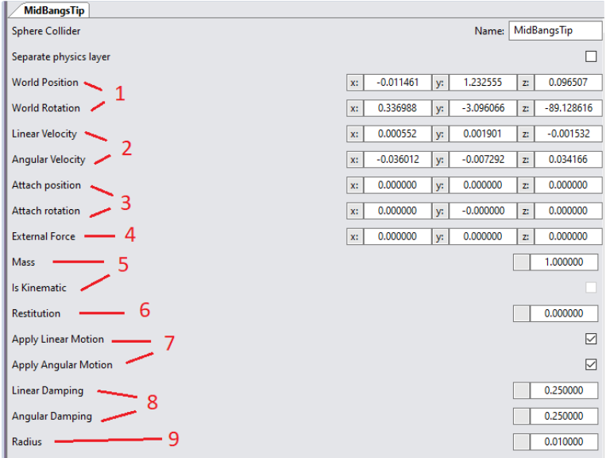
1. World Position and Rotation [-∞, ∞] – represents the position and rotation(degrees) of the collider in world coordinates.
2. Linear and angular velocity [-∞, ∞] – represents the current velocity of the collider. These values are for debug purposes and should not be edited directly.
3. Attach position and rotation [-∞, ∞] – appears only if a collider is attached to a bone. They represent the offset position and rotation (degrees) from the bones’ transformation.
4. External force [-∞, ∞] – a custom force that is applied constantly to the collider. Used to create physics setups that would otherwise not be possible (ex. we can create an inverted pendulum by applying an upwards force that is stronger than gravity to the swinging end of the pendulum).
5. Mass [0, ∞] – represents the rigid body's mass in kilograms. It is limited from 0 to 10,000 Kg although, it isn’t recommended
Kinematic vs. Dynamic
Based on the mass of a collider, it can be either Dynamic or Kinematic:
A) Mass = 0 → collider is Kinematic, which means that the collider will follow the bone to which it is attached to, put simply, the collider follows the bone.
B) Mass > 0 → collider is Dynamic, which means that the bone will follow the collider that is attached to it, put simply, the bone follows the collider.
The UI shows whether a collider is kinematic by the row with a disabled checkbox, if it is checked it is kinematic, otherwise it is dynamic.
If a Kinematic Node is left unattached to a bone, it will rest at its current position and although it will collide with other colliders, it will remain “untouched” as it doesn’t take any forces or impulses from other collisions and will remain perfectly still where it was last positioned.
6. Restitution [0, 1] – represents the elasticity of collisions with the collider, where 0 means it will not bounce at all, and 1 means it will bounce in its collisions with the same force that it entered the collision.
7. Apply Linear / Angular Motion – based on whether the option is checked or not, it will apply the motion of the Collider to the Bone. It is sometimes useful if you are interested in applying only one of the two types of motion to the bone.
8. Linear / Angular Damping [0, 1] – represents the amount of damping to be applied to the linear/angular motions of this collider, where the value 1 means, the collider will try to stop from moving/rotating and 0 means no damping is applied at all.
9. Radius [0,01, ∞] – in this case, the collider is a Sphere Collider which also comes with a Radius parameter to scale the size of the sphere. A box collider will have the length of one side to determine its size
Collider Types
Currently, Animaze supports only one type of collider, which is a Sphere Collider along with the Empty Collider, which has no collision detection and only simulates a physical object.
- Empty Collider – has no collision shape and as such, it doesn’t collide with any other object.
- Sphere Collider – has the collision shape of a sphere with its center in the position of the rigid body and a radius that describes its size.
- Box Collider – has the collision shape of a cuboid with editable width, height and length.
- Mesh Collider – has the collision shape of convex hull. It is defined through a .obj file that is provided. For good performance It is recommended that the shape does not have more than 30-40 vertices. Such a collision shape is often used to prevent other colliders from entering it (ex. a mesh collider placed on the shoulder of a character so the colliders on its hair don’t go through it).
- Capsule Collider – not yet available
- Cylinder Collider – not yet available
Constraints
Constraints are Bullet’s way of tying two Rigid Bodies together in order to create various kinds of behavior between the two constraint bodies (ex. Springs, Hinges, Cone twist etc.). They are very powerful in terms of possibilities with lots of parameters and can be quite difficult to grasp.
Currently, we support two of the most powerful type of constraints implemented, the Cone Twist Constraint as well as the 6 Degrees of Freedom Constraint, which is the most versatile one.
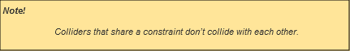
Adding new Constraints
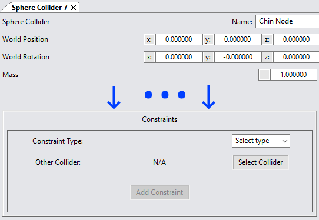
Constraints can be found by selecting any Collider and scrolling to its “Constraints” Section.
By selecting any Collider, you will be able to see all the Constraints that affect that particular collider. This effectively means that you can find a constraint by selecting either of the affected Colliders
The order in which Colliders are selected for the Constraint matters! Selecting Collider A in the UI and then for the other collider, selecting Collider B yields different results than doing B first and A second, in the sense that some constraint parameters will need to have different values based on the order of colliders chosen, to achieve the exact same result. As such, as a rule of thumb, try to build your physics systems from the inside of the character towards the outside.
Here you will have to choose the type of Constraint you would like to add as well as the other Collider you want to be involved in this new Constraint you are adding.
Modifying Constraint Properties
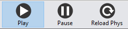
Animaze Editor can Pause / Play the physics in order to keep the colliders in the same place while modifying properties to constraints and colliders alike. Although possible to modify constraints while the simulation is running, it is highly inadvisable to do so, as constraints in particular act differently based on how they are configured.
This system works much better if you modify the physics in the paused mode, saving on each step and playing to see that the results are what you expected.
I would also like to point out that some constraint configurations are very unstable and that they can break the physics simulation in some cases. Therefore, it is advisable to work in steps and save on each iteration of adding to the physics simulation.
Cone Twist Constraint
It is a special point to point constraint that adds cone and twist axis limits. The x axis serves as twist axis. This constraint is especially useful if you want to limit a collider to move on the surface of a sphere but limit it to be able to move on a smaller surface than the entire sphere. This constraint can also be used to limit the amount of twist one collider executes from the other, at which point, after exceeding the limit, no longer allowing the bodies to twist, acting like a bar connection.
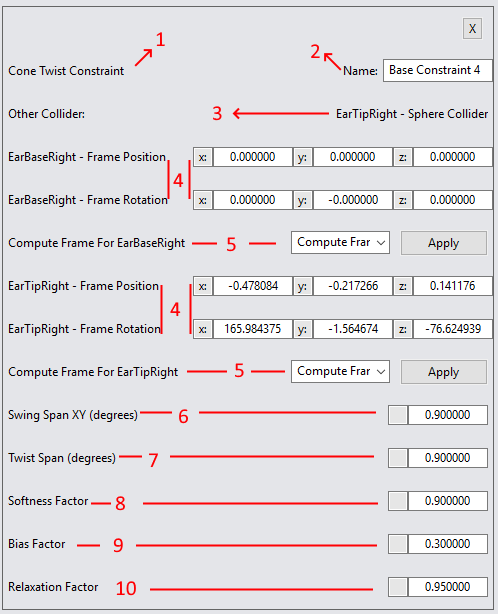
The properties of a Cone Twist Constraint are as follows:
1. Type – Specifies the type of Constraint
2. Name – The name of the Constraint
3. Other Collider – The name of the Other Collider involved in the Constraint
4. Frame offset in Collider A / B – The local Frame offset position and rotation for the Collider in which the Constraint will be applied.
For Example:
- a position of (0, 0, 0) will apply the constraint in the very center of the rigid body
- a position of (1, 0, 0) will apply to 1meter offset on the X axis from the rigid body’s actual position in its local coordinates.
The position and rotation offsets can help you orientate your constraint in the direction you want.
5. Compute Frame for Collider A / B – This drop-down will help you compute the frame offset in case you want the offset to place collider A in collider B or vice versa.
If you select for Collider A to compute the offset such that it lands in Collider A as well, the position and rotation values will be (0, 0, 0) as expected.
6. Swing Span XY [0, 360] – Describes how large of an opening on the sphere, in degrees, the colliders can swing.
For example:
Swing span = 0 degrees→ the colliders cannot swing at all and are locked in their orientation
Swing span = 90 degrees→ the colliders can swing in a cone of 90 degrees on the surface of the imaginary sphere
Swing span = 180 degrees→ the colliders can swing in a cone of 180 degrees on the surface of the imaginary sphere, which is equal to being allowed to move on only half of the sphere.
7. Twist Span [0, 360] – Describes how much one collider can rotate with respect to the other collider in degrees, where 0 means no rotation is allowed, 180 means half turn, and 360 means unlocked rotation
8. Softness Factor [0, 1] – Describes the percentage of limits where movement is free. Beyond this softness percentage, the limit is gradually enforced until the "hard" (1.0) limit is reached. Recommended values are from ~0.8 to 1
9. Bias Factor [0, 1] - Strength with which the constraint resists zeroth order (angular, not angular velocity) limit violation. Recommended value 0.3 +/-0.3 or so.
10. Relaxation Factor [0, 1] - The lower the value, the less the constraint will fight velocities which violate the angular limits. Recommended to stay near 1.
6 Degrees of Freedom Constraint (6DOF)
The 6 DOF Constraint is one of the most versatile constraints available in bullet as it has individual control across all 6 degrees of freedom. Over each axis it can limit confine its freedom between 2 limits, create a spring or motor, although for now motors are not yet available. This combined with Frame offsets allow for a wide variation of use cases for this type of constraint.
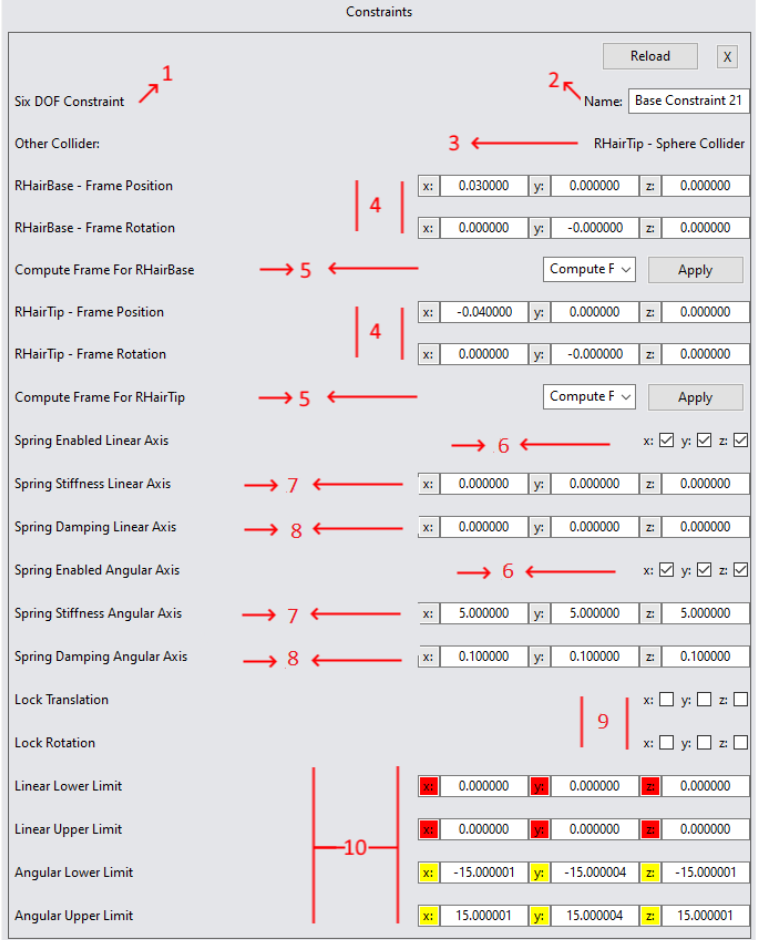
Properties:
1. Type – Specifies the type of Constraint
2.Name – The name of the Constraint
3. Other Collider – The name of the Other Collider involved in the Constraint
4. Frame Offset in Collider A / B – The local Frame offset position and rotation for the Collider in which the Constraint will be applied.
For example:
- a position of (0, 0, 0) will apply the constraint in the very center of the rigid body
- a position of (1, 0, 0) will apply to 1meter offset on the X axis from the rigid body’s actual position in its local coordinates.
The position and rotation offsets can help you orientate your constraint in the direction you want.
5. Compute Frame for Collider A / B – This drop-down will help you compute the frame offset in case you want the offset to place collider A in collider B or vice versa.
If you select for Collider A to compute the offset such that it lands in Collider A as well, the position and rotation values will be (0, 0, 0) as expected.
6. Spring enabled for axis – Decides whether any of the 6 axis will act as a spring. If disabled, the constraint is hard, otherwise, if it is a spring, based on the stiffness and damping of the spring, it will usually result in a weaker, more elastic constraint on that axis, simulating a spring.
7. Spring stiffness for axis – Sets the strength with which the constraint will try to fight any deviation from the spring equilibrium
8. Spring Damping for axis [0, 1] – Sets the damping factor with which the forces are applied where 1.0 fully dampens the force and 0.0 applies the force fully.
9. Lock Translation / Rotation – lock particular degrees of freedom in the constraint.
10. Linear and Angular Limits – These limits decide for each axis how much it can travel / rotate based on the following rules:
For each axis:
- Lowerlimit == Upperlimit → axis is locked.
- Lowerlimit > Upperlimit → axis is free
- Lowerlimit < Upperlimit → axis is limited in that range
Undo/redo functionality for physics objects options
All collider or constraint options mentioned previously have undo/redo support by using CTLR-Z and CTRL-Y so trying out different values is not too difficult.
Debugging physics setups
Whenever we build or debug a physics setup for a character, we need to see colliders, as they are not rendered by default. By selecting the viewport and pressing SHIFT-P repeatedly, we can toggle between three different states:
- a state where colliders are rendered with both a wireframe object and a textured object that will always be rendered on top (no depth check). Useful because most colliders will be attached to bones that are not visible with just the wireframe representation.
- a state where colliders are rendered using only a wireframe object. Useful whenever the textured object is blocking the view on other colliders.
- the default state where colliders aren’t drawn.
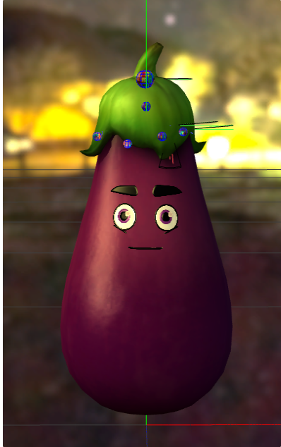
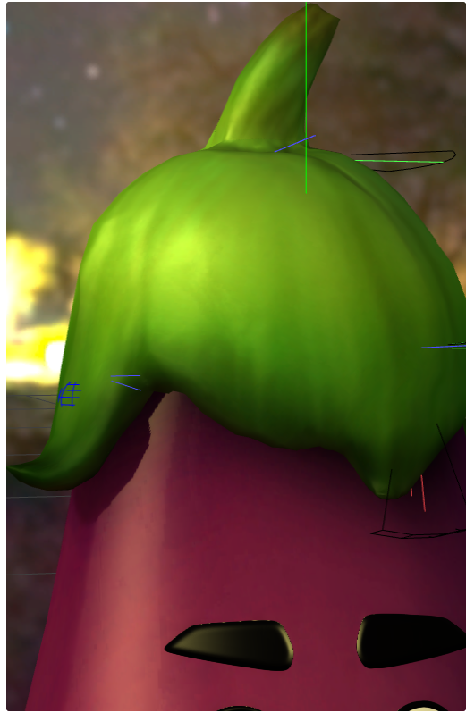
Scaling physics setups
Constraints and colliders will adjust to scaling (constraints length, colliders shapes) at runtime in two ways: transform scaling that scales the entire character or customization scaling (ex. a customization that scales the avatar’s hair, but in this case only colliders and constraints related to bones affected by the customization will scale). Thus, the physics setup only needs to be done for the default character scale.
Avatar at 0.1 scale:
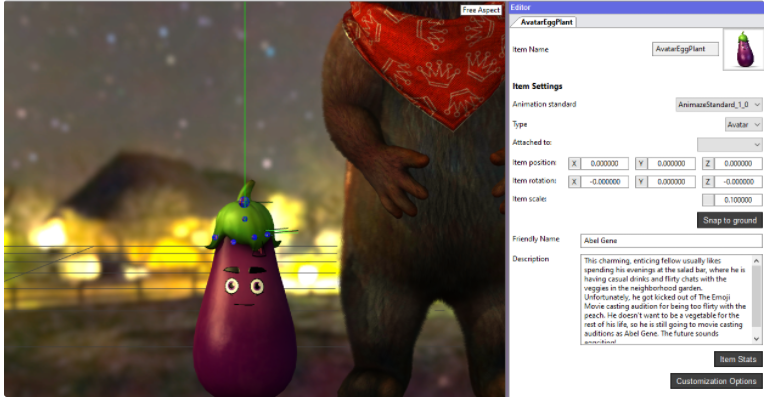
Avatar at 0.3 scale:
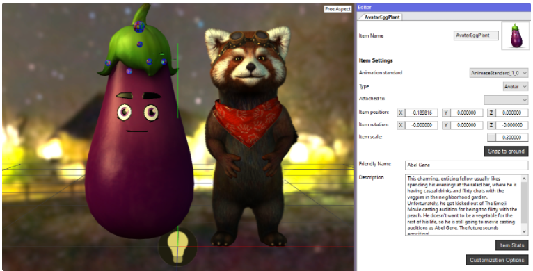
This also applies to customizations that scale a part of the avatar:
Head scale customizations at 1.0:
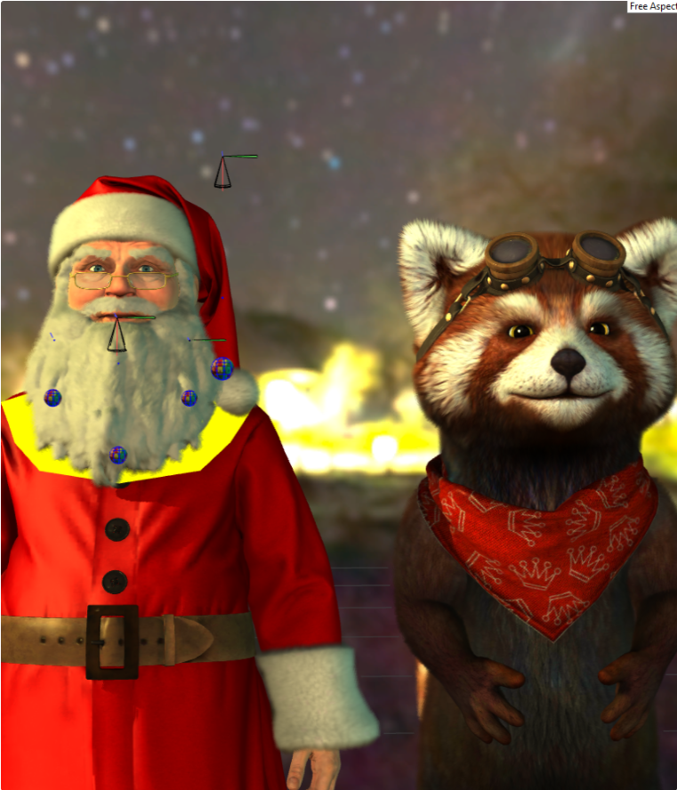
Head scale customization at 0.0:
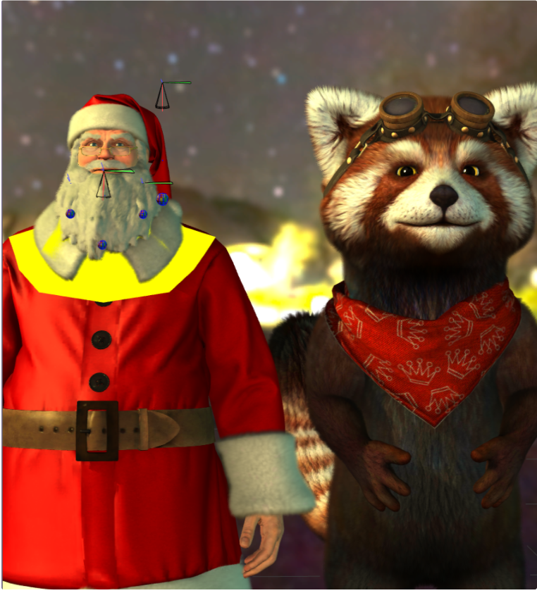
Examples
1. Creating a simple pendulum setup
The most common physics setup is the pendulum since it’s usable for hair and clothing. This simple example will however walk us through the basic steps of building the setup and lay the foundation for more complicated things.
A good example of an item that benefits from the pendulum physics pattern is the Santa hat:
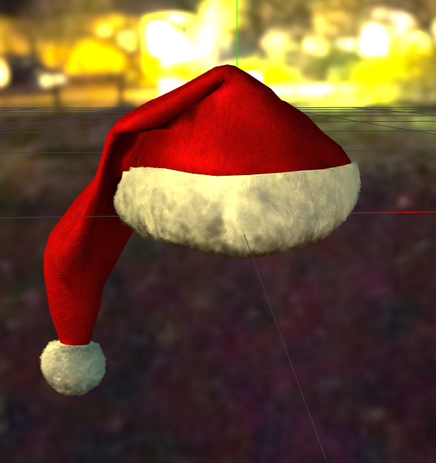
We would like to setup a pendulum on the tip of the hat, so it will move and dangle away. We need two nodes, or collider, to achieve what we want:
- a kinematic node that will serve as the base of the pendulum and prevent the other node from falling downwards due to gravity.
- a dynamic node that will update the bone from the tip of the hat according to the physics simulation.
- a constraint that will tie the two nodes together and define its linear and angular limitations, along with other effects like stiffness.
On this model, we have “BipSantaHat1“, which is a bone that is placed a bit outside the model so it’s easier to have a straight pendulum. This node will serve as the kinematic node.
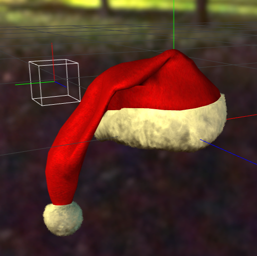
We also have “BipSantaHat2“, which is placed on the tip of the hat and will serve as the dynamic node. This node is properly skinned so we can use it for physics.
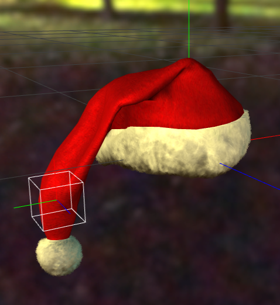
Let’s see what steps need to take, to achieve our goal:
1. Before we add the collider, we should remember that it’s recommended to edit physics while the engine is paused to avoid getting into weird interactions. Also, when we add a collider, by default, it will have a mass of 1 kilogram so it will be affected by gravity and fall indefinitely.
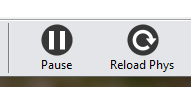
2. In order to see the colliders that we’re adding, we should go into physics debug mode by selecting the viewport and pressing “SHIFT-P“
3. After that, we can go ahead and attach a collider on “BipSantaHat1“ and one on “BipSantaHat2“
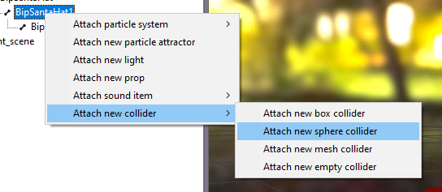
After adding the colliders, out setup should look like this:

4. We should now select the collider that is attached to “BipSantaHat1“, which is the base of the pendulum and make it kinematic by setting its mass to 0. While we’re here we might as well halve its radius too, since the default is a little large for our model. We can then go to our other collider and change its radius too, for consistency’s sake.
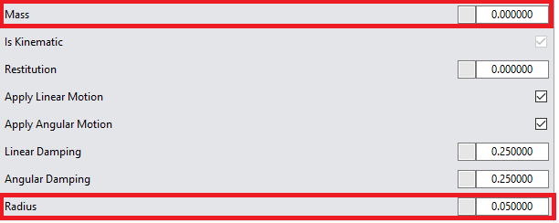
5. We can now go ahead create the constraint that will tie our two colliders together. We will use the versatile 6 DOF constraint for this. Remember that the direction of the constraint is important: we could do it either Base > Tip or Tip > Base, but usually we should do it from inside to outside. In this case, it might be more reasonable to set up the constraint Base > Tip. We can select the base collider (the one attached to “BipSantaHat1“) and add the constraint, selecting the other collider as its partner:
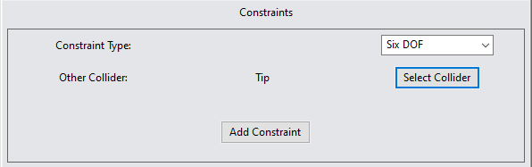
6. Once we have the constraint in place, we’ll notice that whenever we hover the panel that defines its parameters, the two colliders in the constraint are highlighted, along with the constraint (the line connecting them).
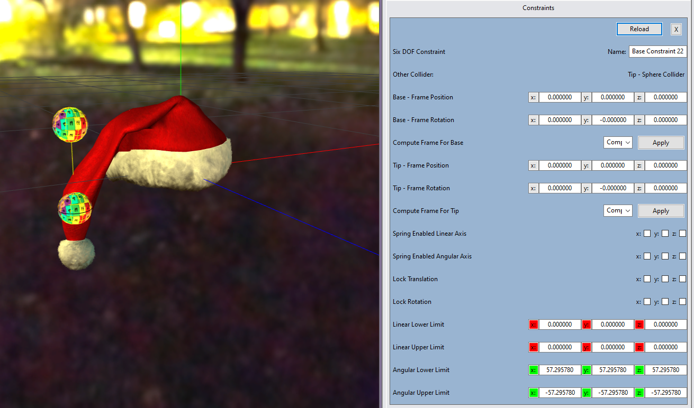
7. With a new constraint, the first thing we should think about is the frame position. As mentioned earlier this parameter defines the distance between the two colliders or the length of the constraint. We could find appropriate values by trial and error or use the “Compute Frame“ feature. What this feature does, it takes the current distance between the colliders and uses that (remember that the engine is paused right now, the dynamic collider is not moving the bone at all, so what we’re really doing, is creating the distance between the bones).
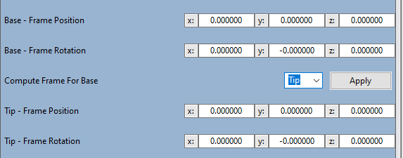
8. You’ll notice that we have two sets of controls, because we can configure the frames both ways (Base > Tip or Tip > Base). To keep our rule of Base > Tip, we’ll use the first set of controls and select “Tip“ from the combo. After we press apply, we’ll notice the frame position has been updated. We’ll also notice that its frame rotation has also been changed, but for this case, we don’t need any frame rotation so we can zero it out.
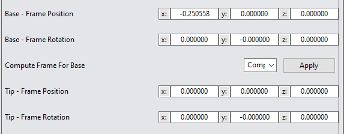
9. Now we’re almost done, but if we were to un-pause our physics simulation, we’ll notice our colliders going wild in every direction. This is because of the freedom of motion that the constraint allows, rotation-wise. The dynamic is not allowed to move because it’s limits are [0,0], but it’s allowed to rotate in any way possible (because, as mentioned earlier, the lower limit is higher than the upper limit).
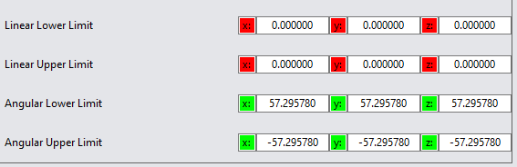
We can start with a smaller interval for rotation freedom, something like [-15, 15].
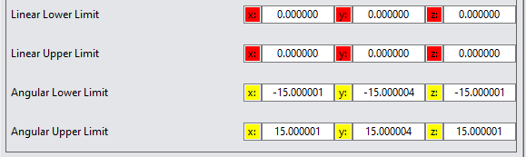
10. We can finally test out result by resuming the physics simulation and moving the hat using the transform gizmo, for example. If we’d like the tip to be less stiff, we could increase the angular interval to something like [-45, 45], but this depends on the effect we want to achieve.
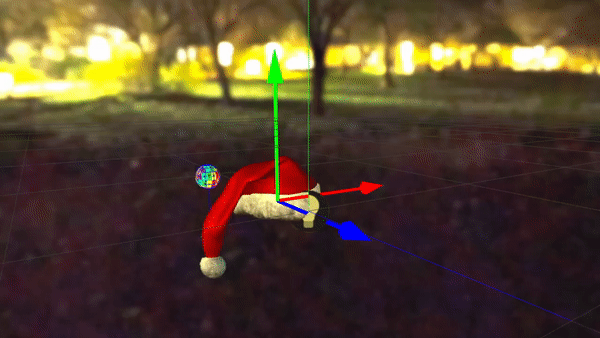
11. Finally, we should remember to save our work. It’s recommended to save often so we avoid getting into weird physics situations and be left unable to revert to a good checkpoint.
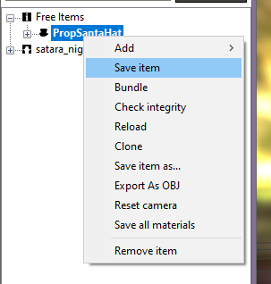
2. Create a more complex pendulum setup
The Goal
Make Avatar Ram’s chin simulate natural movements of its goatee based on how the avatar’s head moves. If we were to list the requirements they would look as follows:
-
The Goatee will pivot a certain angle in each direction
-
It should have little rotation around its length.
-
The pivoting should be done on the skinned bone “BipChin”
-
The collider should rotate but ideally stay in the same position with respect to (w.r.t.) the head of the avatar
The Explanation
Initially it seems like we could solve this with just two colliders:
-
Collider 1 - “Fixed Node” - The collider attached to “BipChin” that will do all the rotations required by the goatee.
-
Collider 3 - “Swinging Node” - The unattached collider that will somehow connect to the “Fixed Node” and hang from it, rotating it in the direction gravity points to.
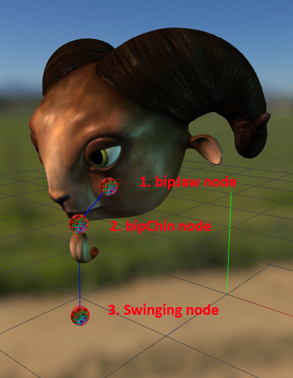
This amounts to two colliders, both dynamic, one to swing from the other, the fixed one rotating the chin. In practice, if we execute this, the Chin node will start rapidly falling, leaving the head behind and stretching its chin to infinity. That is because the chin is a dynamic collider which means it interacts with gravity and is pulled downwards rapidly.
We might think about making the Chin collider Kinematic, thus keeping it in the same spot. The problem is that a kinematic node does not apply its transform to the bone, and as such, making the fixed node kinematic does not work.
What is left is to introduce a third node:
- Collider 2 - “Kinematic Node” - This collider will be used as an anchoring point for the “Fixed Node” such that it stays withing the same frame of reference with respect to the head. That means we will have a second Constraint that will keep the “Fixed Node” in place. This can be placed
After deciding upon what colliders we need, the constraints are next. We will need two of them:
- Cone Constraint (Cone Twist Constraint) – This will keep the Chin node oriented towards the swinging node, as if constantly following the fixed node.
- Fixed Constraint (6DOF Constraint) – This will keep the bipChin node in the very same position with respect to bipJaw node regardless off how the avatar moves. BipJaw is one of the multiple bones that could have been chosen, the only real criteria is that the difference between these bones’ transforms to stay the same regardless of what animation or movement the character is doing. Otherwise, the constraint will not always keep the bipChin collider where it should actually stay.
In fact, one could think to take advantage of the fact that 2 colliders that share a constraint don’t collide with each other and create another “BipChin” node that is kinematic this time, held by a constraint in the exact same place. But this would probably fail because the dynamic “BipChin” would cause the bone to fall due to gravity, and the kinematic “BipChin” would just follow the bone whilst falling.
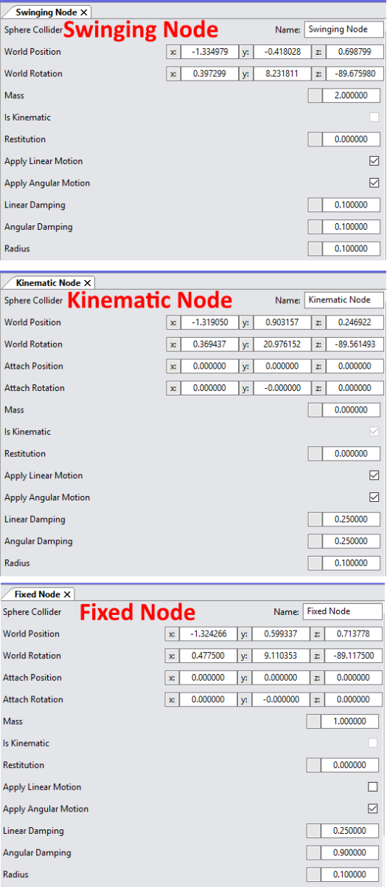
The Solution
- The Swinging Node has relatively standard properties, with a mass of 2kg instead of one in order for it to have slightly higher inertia. It also has slightly smaller damping values (0.25 → 0.1) in order for it to be able to move a bit faster.
- The Kinematic Node has the mass 0 because we want it to follow the BipJaw bone.
- The Fixed Node has a slightly higher angular damping values so as to try and resist the movement of the chin rotations a bit more than the default.
A more important note, it has the “Apply linear motion” toggled off. This is because the node still moves and this is a neat little trick in which we discard the movements of the node and apply only the rotations of the node.
Most of these values are discovered by trial and error in order to achieve the desired outcome.
Cone Constraint
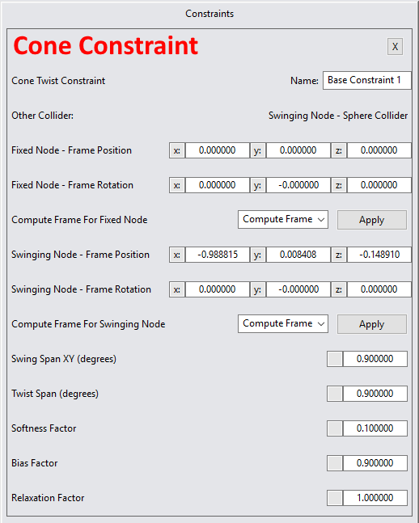
6 DOF Constraint
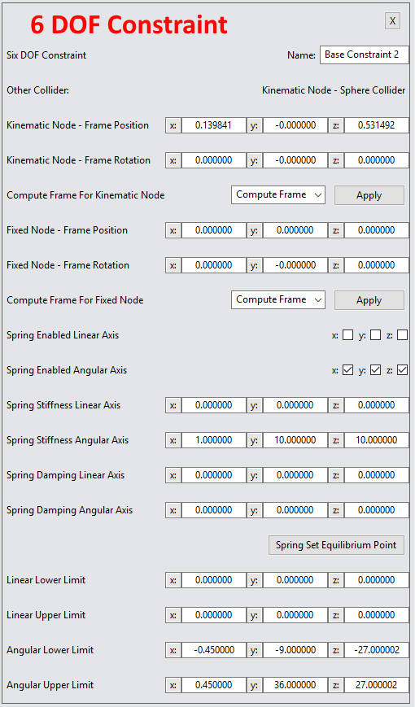
3. Create an inverted pendulum
The Goal
Moving on to something advanced, we could try to create a physics setup for this balloon, so whenever it’s moved, the strings will pull the balloon along with it. Basically, our goal is to create an inverted pendulum.
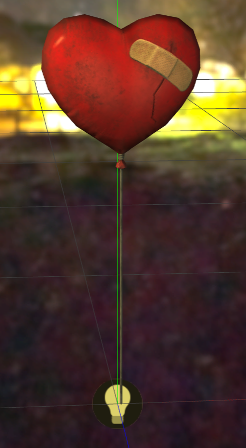
The Explanation
We’re going to need three nodes for our setup in order to have a nice effect:
- a base kinematic node that holds the other nodes to the ground through constraints. this is very common and found in any physics setup.
- a first dynamic node in the middle of the string. We could have a node directly at the top of the string, where the balloon starts, but our string would always be straight and not very realistic. Creating a chain of at least three nodes is much better.
- a second dynamic node at the end of the string. This will be the node that will move the balloon itself.
Our constraints should be:
- base → first dynamic node - this defines the freedom of motion for the base part of the string. This part should have both linear and angular freedom, and its linear freedom should be quite pronounced. We will see how we can achieve this in a moment.
- first dynamic node → second dynamic node - this defines the freedom of motion for the balloon itself. The second dynamic node will already inherit the motion of the first dynamic node, so it only needs a little bit of linear freedom so it’s not locked into place.
The key to this setup is the is the external force property that we can setup on colliders. Using an upward force that is stronger than gravity will ensure that our dynamic colliders will float. We will also spruce up our setup with spring behavior (stiffness and damping).
The Solution
1. The first step is to attach three new colliders to the three skinned bones along the string and then add the default constraints mentioned. Immediately after that, we can configure the frame positions on the two constraints to something that makes sense. Here we have 22 centimeters on the Y axis between the base and the first dynamic collider and 24 centimeters from the first dynamic collider to the second.
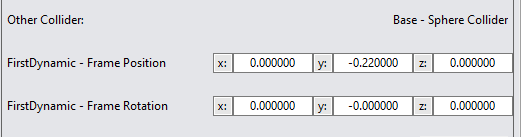
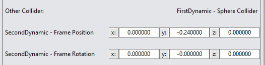
2. Afterwards, let’s configure the external force on each collider to something like (0, 20, 0). Since in our engine gravity is defined as (0, -10, 0), we can rest assured that our colliders will float.
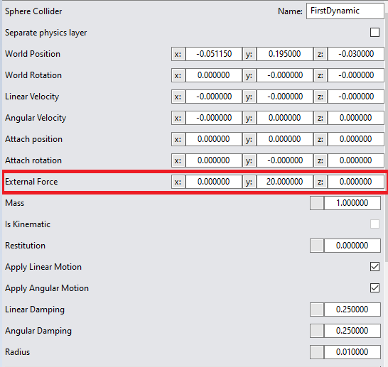
3. To start with, let’s remove all freedom of movements from our constraints so both linear and angular limits should be set to 0.
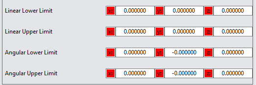
4. Let’s also apply a bit of spring behavior (stiffness and damping) to both constraints.
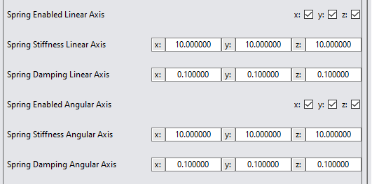
5. So far, our Base > First constraint looks like this:
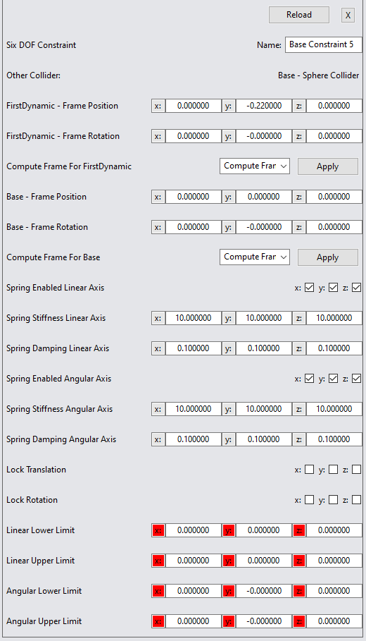
6. And our FirstDynamic > SecondDynamic constraint looks like this:
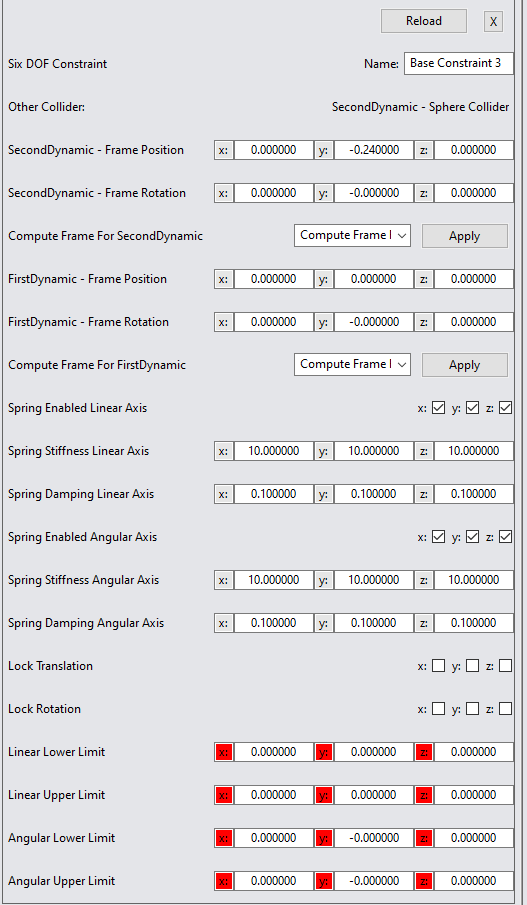
Testing our setup, we will see something like this:
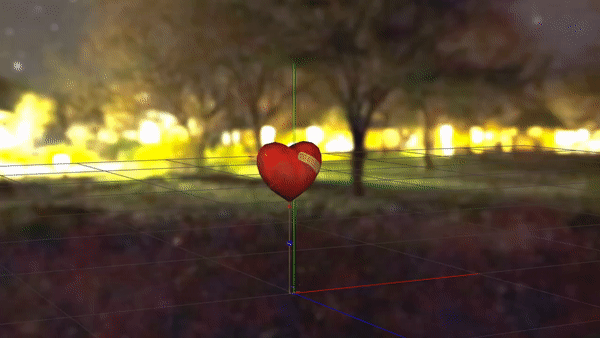
7. It’s starting to look like what we might want, but the string is not moving, bending or rotating at all. Our final touches need to go into linear and angular limits for each constraint. On the Base > FirstDynamic constraint, let’s give it spaces to move in a 0.6 meters cube and angular freedom of 60 degrees.
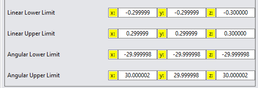
Testing again, things are looking a lot better! In most cases of an inverted pendulum we could stop here.
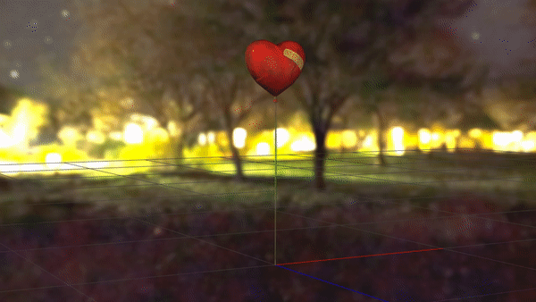
8. The bottom part of the string is moving well, but the upper part is still rigid. Let’s give it some freedom, too. On the FirstDynamic > SecondDynamic constraint we can have the following.
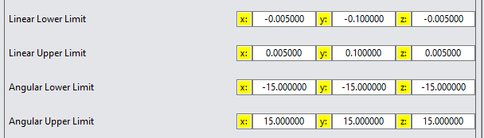
The settings above will ensure a bit of linear movements on Y axis for the middle colliders (allowing the string to bend when an upward or downward movement is applied to the balloon) and some angular motion. The X and Z linear limits are fixed to a length of 0.01, which is 1 centimeters, which is the radius of the spheres. This ensures the middle colliders won’t move a lot. If we find that it does, we can reduce these two dimensions to even lower numbers.
9. Finally, we have our resulting physics setup for the balloon. The wireframe cube you see around the balloon is the space in which the middle collider can move in respect to its constraint with the base collider. This give a visual idea of what the limits will be.
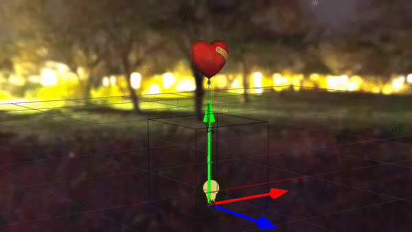